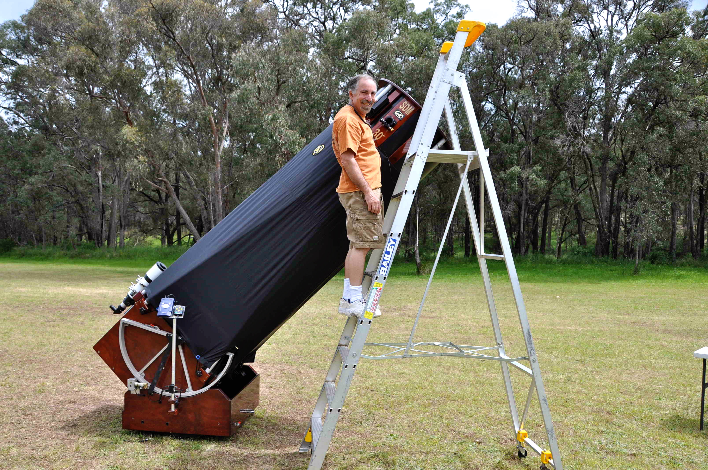
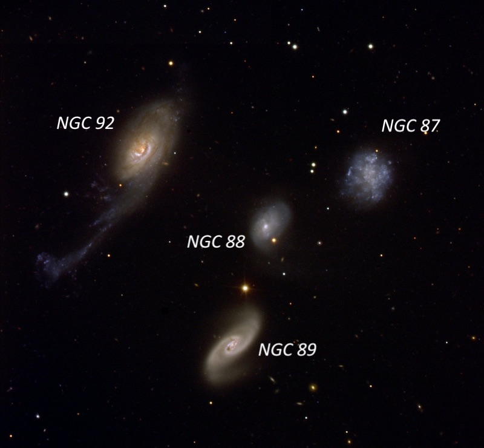
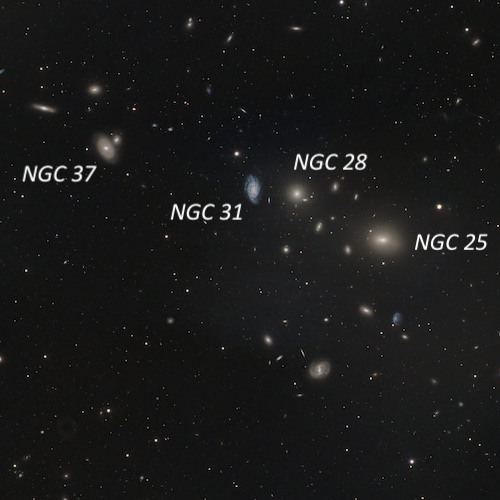
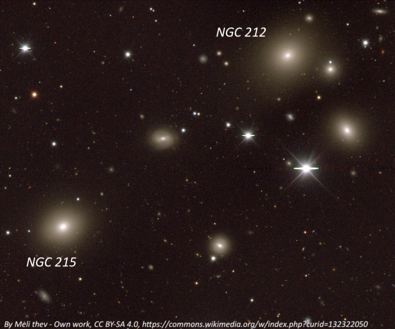
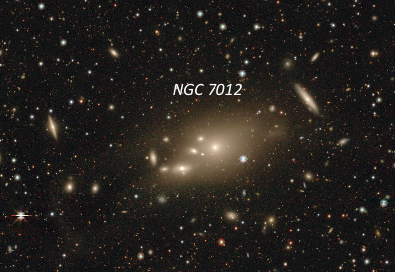

Nov 2010 (part 2) Australia
Here's a sample of a few galaxy groups and clusters in Phoenix and Microscopium using the 30-inch f/4.5 from Coonabarabran. The observing field was in the field behind the Warrumbungle Mountain Motel (https://warrumbungle.com/). We were basically the only motel guests except for a few astrophotographers, and there were no visible lights or sky glow in any direction. The scope was fully equipped with a Servocat drive system and Argo Navis digital setting circles, so locating and keeping objects centered while I took notes on the ladder was a snap. Generally I used 264× (13mm Ethos) to identify objects and then 429× (8mm Ethos) to examine for details and to take notes.

NGC 87, 88, 89 and 92 form a distinctive compact quartet in the southern constellation of Phoenix. If located further north, this group would certainly qualify as one of the best Hickson Compact Groups (HCG). John Herschel discovered the quartet on September 30, 1834, observing from the Cape of Good Hope with his 18.7-inch speculum reflector. The group is sometimes referred to as the "Phoenix Quartet" or "Robert's Quartet" and carries the catalogue designations Arp-Madore 0018-485 and Rose 34. The quartet is clearly interacting with a long tidal tail pulled out from NGC 92 that extends 100,000 light years. In addition, NGC 87 is a distorted Magellanic-type galaxy with bright knots of starburst activity. All notes were taken at 429x
NGC 87
00 21 14.2 -48 37 42
V = 14.3; Size 0.9' × 0.7'; Surf Br = 13.6
Fairly faint, irregularly round, 0.7' diameter, low even surface brightness. NGC 87 is the second faintest in the quartet with NGC 88 1.5' SE. The arrangement is distinctive with the three brighter galaxies (NGC 87/89/92) arranged in an equilateral triangle with NGC 88 in the center, forming a "Y" or propeller shape. ESO 194-13 lies 12' ENE of the quartet.
NGC 88
00 21 22.0 -48 38 24
V = 14.4; Size 0.8' × 0.5'; Surf Br = 13.2; PA = 145°
NGC 88 is the faintest member of the quartet. It is small, slightly elongated NW-SE, with a very small bright core. An extremely faint star is attached at the SW end. This galaxy is centered in the equilateral triangle of galaxies with NGC 87, 89 and 92.
NGC 89
00 21 24.4 -48 39 55
V = 13.5; Size 1.2' × 0.6'; Surf Br = 13.0; PA = 148°
NGC 89 is moderately bright and large, elongated 2:1 NW-SE, 1.0' × 0.5', very small slightly brighter core, faint stellar nucleus. It has a slightly higher surface brightness than NGC 92. NGC 88 lies 1.5' N and a faint star is 43" N (at the midpoint to NGC 88).
NGC 92
00 21 31.6 -48 37 30
V = 13.1; Size 1.9' × 0.9'; Surf Br = 13.6; PA = 144°
NGC 92 is the brightest member and furthest east in the quartet. It appeared moderately bright and large, elongated 2:1 NW-SE, 1.2' × 0.6', broad concentration to a bright core. The faint tidal tail to the SE was not seen. ESO 194-013, a fifth member of the group, lies 11' ENE.
ESO 194-013
00 22 38.1 -48 34 52
V = 13.6; Size 1.1' × 1.0'; Surf Br = 13.6; PA = 47°
ESP 104-13 was picked up while viewing the quartet and it is a physical member of the group. At 429x, it appeared moderately bright and large, elongated 4:3 SW-NE, 0.9'× 0.7', broad concentration with a slightly brighter core but no distinct zones. A distinctive string of three mag 13 stars [length 1.4'] is centered 2' E.

NGC 25, 28, 31 and 37 are the four brightest members of Abell Galaxy Cluster (AGC) 2731, also in Phoenix, near the Tucana border. AGC 2731 is part of a chain of rich galaxy clusters that form the Phoenix Supercluster, along with AGC 2806, 2870 and 2877. The four NGC galaxies form a distinctive string oriented SW to NE, and are surrounded by several faint galaxies. I logged a total of 9 members, most of the fainter ones having 2MASX designations from the 2-Micron All Sky Survey.
NGC 25
00 09 59.4 -57 01 14
V = 13.0; Size 1.4'x0.8'; Surf Br = 14.0; PA = 85d
30" (429x): Fairly bright, moderately large, elongated 3:2 E-W, 0.8'x0.5', fairly well concentrated with a brighter core. Flanked by a mag 15 star 0.6' NE and a similar star 1' S. Located 2.7' SE of a mag 10.5 star. NGC 28 lies 4' NE, NGC 31 5.7' ENE, 2MASX J00101851-5700419 2.5' ENE and Fairall 1 3.0' SSE.
NGC 28
00 10 25.2 -56 59 21
V = 13.8; Size 0.8'x0.6'; Surf Br = 12.9
30" (429x): moderately bright, fairly small, irregularly round, 30"x25", fairly high surface brightness, steadily increases to a very small bright core and stellar nucleus. Located in the core of the cluster with NGC 31 1.8' E, NGC 25 4' SW, and PGC 394784 2.4' SSE.
NGC 31
00 10 38.5 -56 59 11
V = 13.6; Size 1.1x0.6; Surf Br = 13.1; PA = 5d
30" (429x): this is the largest of 9 members of AGC 2731. Appeared moderately bright, moderately large, oval 3:2 N-S, 1.2'x0.8', broad concentration, bright core. Situated in the center of the cluster with NGC 28 1.8' W, NGC 25 5.7' SW and NGC 37 6.3' ENE. A mag 12 star lies 1.7' NNE.
NGC 37
00 11 23.0 -56 57 26
V = 13.7; Size 1.1x0.7; Surf Br = 13.2; PA = 35d
30" (429x): fairly faint, fairly small, elongated 3:2 SSW-NNE, 0.6'x0.4'. Sharply concentrated with a very bright compact core, surrounded by a low surface brightness halo. A mag 15 star lies 0.8' E. 2MASX J00111972-5657065, a very compact galaxy, is just off the NW side. Located 6.3' ENE of NGC 31. A couple of faint members lie 2.5' NNE (2MASX J00112633-5655018) and 3' NE (2MASX J00114159-5655469).

NGC 212 and 215 are the two dominant galaxies in AGC 2806, another member of the Phoenix Supercluster. This cluster contains mostly elliptical (E) and lenticular (S0) galaxies. There are two 10th magnitude stars in the center of the cluster that are somewhat distracting. Perhaps these stars masked some of the fainter members from John Herschel when he found the two NGC galaxies in October 1834 from South Africa. With the 30-inch, I easily logged a dozen 16th-magnitude members.
NGC 212
00 40 13.3 -56 09 11
V = 13.4; Size 1.2' × 1.0'; Surf Br = 13.6; PA = 131d
NGC 212, along with NGC 215, are the two brightest members in the core of AGC 2806. It appeared moderately bright, irregularly round, ~55" × 45", broad concentration. A dozen members were easily picked up in the 23' field, though I didn't spend time looking for the faintest members. The nearest is LEDA 3600352 just 1' WSW, while NGC 215 lies 6' SE. NGC 212 is situated 25' NW of mag 5.7 Xi Phoenicis and just 2.4' N of mag 9.6 SAO 232142.
NGC 215
00 40 48.9 -56 12 51
V = 13.1; Size 1.1' × 0.8'; Surf Br = 12.9; PA = 120d
NGC 215 is the brightest member of AGC 2806. It appeared moderately or fairly bright, elongated 4:3 NW-SE, well concentrated with a bright core that increases to the center. NGC 212 (just barely inferior) lies 6' NW.

NGC 7012 is the brightest member of the cluster Abell S921 (a southern supplement to the Abell catalogue). John Herschel, wasn't very sure about his discovery of N7012 in 1834. His notes read "A nebulous looking but doubtful object following a star 10 mag. My eye is too much fatigued to be able to decide on its nature." This time my Megastar chart wasn't complete enough as I picked up a few very small, faint galaxies near NGC 7012 (10 total) that are missing even from the Mitchell Anonymous Catalogue (MAC). Interestingly, the cluster contains several slender edge-ons with roughly the same orientation. I've included descriptions of the four companions within 2' of NGC 7012.
ESO 286-048
21 06 28.9 -44 47 20
B = 15.5; Size 1.2' × 0.3'
Using 429x, this edge-on appeared fairly faint, very elongated 7:2 SW-NE, 0.9' × 0.25', with a brighter core.
NGC 7012
21 06 45.5 -44 48 53
V = 12.7; Size 2.5' × 1.4'; Surf Br = 14.0; PA = 100°
NGC 7012 is the brightest member of the galaxy cluster ACO S921. I quickly took notes on 10 galaxies within a 10' circle including four small companions of N7012 within 2'! N7012 appeared fairly bright, moderately large, round, 50" diameter, well concentrated with a small bright core. The brightest nearby companion is ESO-LV 2860520 situated 1.3' SE but two fainter, very small companions (not included in Megastar) are just off the E and NE edge of the halo. ESO 286-048, a nice edge-on, lies 3.4' NW. A mag 12 star lies 1' SW and a mag 15 star is 27" SE of center. The cluster is centered roughly 14' NE of mag 6.9 HD 200554.
